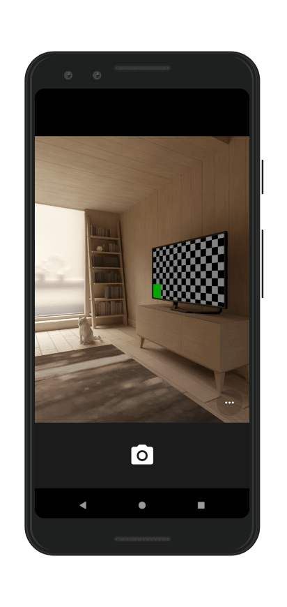
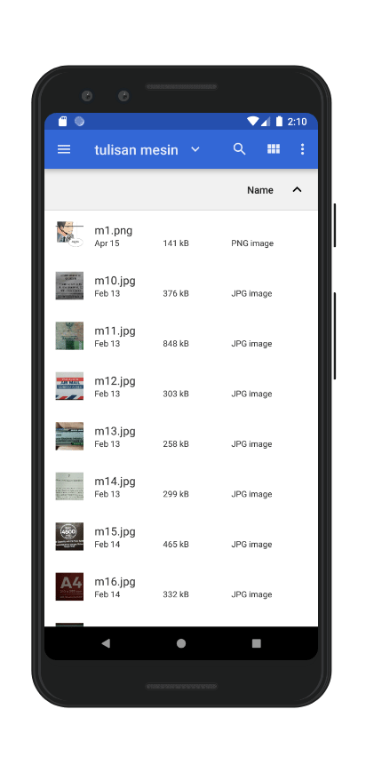
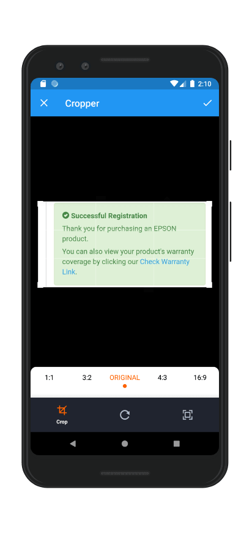
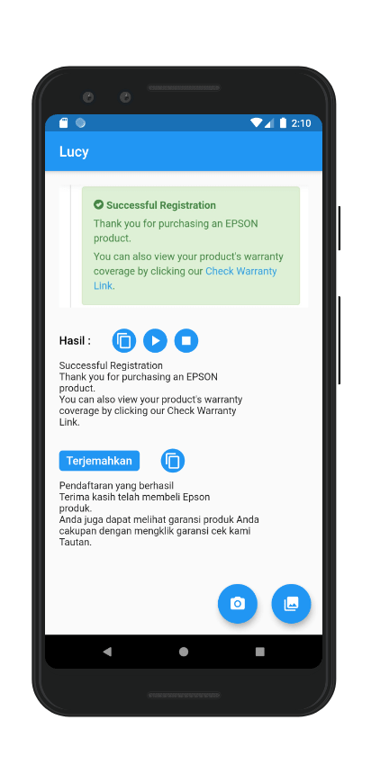

Aplikasi Text Detection
Latest : v1.0.2
Versi 1.0.0Latar Belakang
Dalam pembelajaran bahasa asing perlu suatu sistem yang dapat mempercepat proses pembelajaran. Tulisan bahasa asing langsung diolah dan dipelajari tanpa di ketik manual untuk mengetahui arti dan pengucapannya.
Dalam digitalisasi dokumen, belum ada sistem yang dapat membuat dokumen menjadi kumpulan teks yang dapat diolah kembali.
Fitur
- Pendeteksian teks dari suatu gambar.
- Text to Speech
- Salin teks ke clipboard
- Terjemah ke bahasa Indonesia
Demo App
Screenshot



